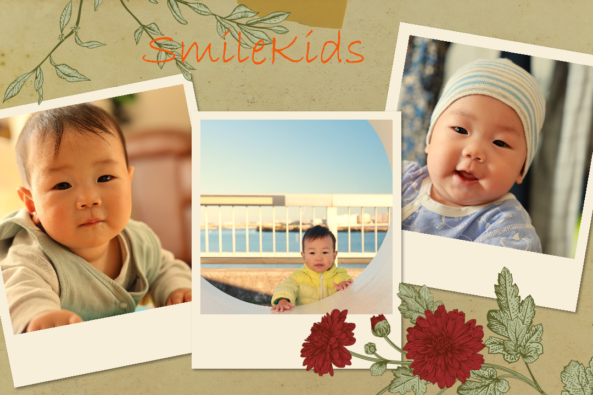
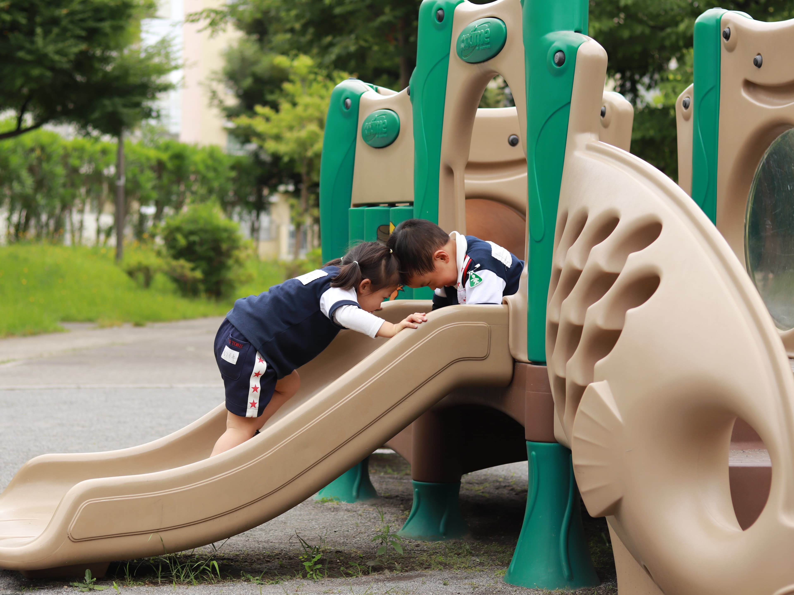

摄影于我，不止是按下快门的瞬间，更是一场与光影、与世界、与自我的对话。每一次取景，都是对美的重新发现；每一次对焦，都是对内心情感的凝视。
镜头背后，我追逐着转瞬即逝的光影，也追逐着平凡生活中的动人瞬间。我渴望用镜头讲述故事，将情感凝固成永恒的画面。无论是壮丽山河的辽阔，还是街头巷尾的烟火气，我都希望用独特的视角，捕捉那些容易被忽略的美好。
作为一名摄影师，我的镜头总是追逐着光与影的交织，捕捉那些稍纵即逝的美好瞬间。然而，最让我感动的，莫过于用镜头记录小朋友的成长。时间如流水，孩子的成长却像一颗颗璀璨的珍珠，串联起无数珍贵的回忆。
还记得第一次拿起相机，为邻居家的小宝宝拍摄满月照的情景。那时的他，小小的身体蜷缩在柔软的毯子里，眼神清澈，仿佛对这个世界充满好奇。如今，他已经是一个活泼好动的小男孩，奔跑在阳光下，笑声如银铃般清脆。
时间是一位魔法师，它悄无声息地改变着一切。而我的相机，就像一台时光机器，将这些变化一一记录下来。从婴儿的第一次微笑，到孩童的第一次奔跑，每一个瞬间都是独一无二的。
每一张照片背后，都有一个温暖的故事。比如那张在公园里拍摄的照片，小朋友正专注地堆着沙堡，脸上沾满了沙子，却笑得无比灿烂。那一刻，我仿佛看到了他未来的模样——一个充满创造力与冒险精神的小小探索者。
还有那张在雨天拍摄的照片，小朋友穿着黄色的雨衣，踩在水坑里，水花四溅。他的眼睛里闪烁着兴奋的光芒，仿佛整个世界都是他的游乐场。这些照片不仅仅是影像，更是成长的印记，记录着他们如何一步步认识这个世界。
作为摄影师，我常常思考，什么才是最有价值的作品？是那些构图完美、光线绝佳的照片吗？或许不是。最有价值的，是那些能够触动人心、留住时光的照片。小朋友的成长瞬间，正是这样的存在。
每一次按下快门，我都在与时间赛跑。因为我知道，今天的笑容，明天就会变成回忆；今天的稚嫩，明天就会变成成熟。而我的相机，就是将这些瞬间凝固成永恒的魔法工具。
时间从不会为任何人停留，但我们可以用镜头留住那些珍贵的瞬间。小朋友的成长是一场奇妙的旅程，而我有幸成为这场旅程的记录者。希望每一位家长都能用心去记录孩子的成长，因为这些照片，将是未来最珍贵的礼物。
让我们一起，用镜头与时间对话，记录下那些稍纵即逝的美好。